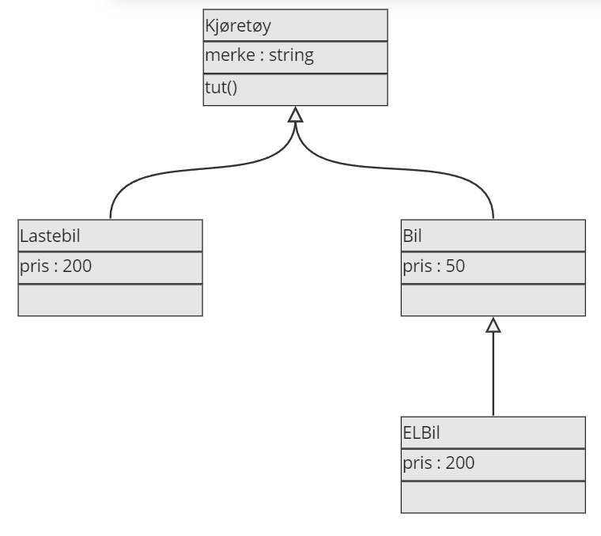

Arv#
Arv er når man har en mer generell klasse som man lager subklasser av. Dette er veldig nyttig når vi skal modellere ting med objekter.
Eksempel: Bompengesystem#
I dette eksempelet skal vi lage et bompengesystem for ulike kjøretøy. Ulike kjøretøy betaler ofte ulikt.
En bil er en form for kjøretøy. Hvis vi lager en klasse Kjøretøy, så vil vi at Bil skal arve fra denne klassen, fordi en bil også er et kjøretøy.
Bil er en subklasse av Kjøretøy, mens Kjøretøy er bilers superklasse.
class Kjøretøy:
def __init__(self, merke):
self.merke = merke
def tut(self):
print("Tut!")
class Bil(Kjøretøy):
def __init__(self, merke):
super().__init__(merke) # Arver data og metoder fra Kjøretøy
self.pris = 50
bil = Bil("Toyota")
bil.tut()
Tut!
Vi ser at alle Kjøretøy-objekter skal ha et merke og kan tute med tut(). Selv om metoden tut() ikke står under Bil-klassen, så ser vi at Bil-objektet har arvet denne metoden fra Kjøretøy-klassen.
Å sjekke typen til et objekt#
type()-funksjonen lar oss sjekke om et objekt tilhører en spesifikk klasse.
class Kjøretøy:
def __init__(self, merke):
self.merke = merke
def tut(self):
print("Tut!")
class Bil(Kjøretøy):
def __init__(self, merke):
super().__init__(merke) # Arver data og metoder fra Kjøretøy
self.pris = 50
bil = Bil("Toyota")
print(type(bil))
print(type(bil) == Bil)
<class '__main__.Bil'>
True
Vi ser at typen til bil er <class '__main__.Bil'>. type(bil) == Bil er True fordi bil er et objekt av klassen Bil.
Hvordan sjekke superklasser
I eksempelet over vil type(bil) == Kjøretøy evalueres til False. Hvorfor?
Vi kan tenke oss at type()-funksjonen sjekker navnet til klassen. Dette navnet er "Bil", ikke "Kjøretøy".
Men en bil er jo et kjøretøy også. Hvis vi ønsker å sjekke typen på en klasse som også gir True for en superklasse kan vi bruke isinstance()-funksjonen.
print(isinstance(bil, Kjøretøy))
Programmet over vil evalueres til True.
Utvidet eksempel: Bompengesystem#
La oss utvide bompengesystemet.
class Kjøretøy:
def __init__(self, merke):
self.merke = merke
def tut(self):
print("Tut!")
class Lastebil(Kjøretøy):
def __init__(self, merke):
super().__init__(merke)
self.pris = 200
class Bil(Kjøretøy):
def __init__(self, merke):
super().__init__(merke)
self.pris = 50
class ELBil(Bil):
def __init__(self, merke):
super().__init__(merke)
self.pris = 25
lastebil = Lastebil("Mercedes")
bil = Bil("Toyota")
elbil = ELBil("Tesla")
print("Pris for lastebil:", lastebil.pris)
print("Pris for bil:", bil.pris)
print("Pris for elbil:", elbil.pris)
Pris for lastebil: 200
Pris for bil: 50
Pris for elbil: 25
Studer eksempelet nøye.
Vi ser at Lastebil og Bil arver fra Kjøretøy og har sine egne priser. ELBil arver fra Bil og har halvparten av prisen til Bil.
Objektorienterte modeller: UML#
Når vi har en del klasser som arver fra hverandre kan det være hensiktsmessig å lage en oversikt, en modell.
{kind=link}
I UML-diagrammer er det vanlig å representere klasser som bokser med tre deler; en del for navnet til klassen, en del for attributtene og en del for metodene. Pilene representerer arv. Subklasser har piler som peker til superklasser.
Denne modellen viser hvilke klasser som arver fra hvilke. Dette kalles et klassehierarki. Desto lengre nedover i modellen vi kommer, desto mer spesialiserte blir klassene. Det vil si at klassene får flere, mere spesifikke, egenskaper. Beveger vi oss oppover i modellen blir klassene mer generaliserte. Det vil si at klassene får færre, mer generelle, egenskaper.
For å lage modeller anbefaler jeg å bruke Draw.io.
Oppgaver#
Oppgave 1 🚗#
Kopier alle klassene fra eksempelet med bompengesystemet.
Lag en funksjon
bom(x)som tar inn et objektx. Funksjonen skal skrive ut hvilken type kjøretøy som kjører igjennom bommen, hvilket merke den har og hva prisen blir.Test funksjonen ved å lage et objekt av hver type,
Bil,LastebilogELBil.
Mulig utskrift:
En ELBil med merke Tesla har passert og må betale 25kr.
Oppgave 2 🐄#
I denne oppgaven skal vi organisere husdyr.
Lag en klasse
Husdyr. AlleHusdyr-objekter skal ha en attributtnavnsom settes som argument til konstruktøren.Lag en klasse
Kylling. Den skal arve fraHusdyrog ha en metodelyd()som returnerer"Kykkeliky!".Lag to nye selvvalgte husdyr som også arver fra
Husdyr-klassen. De skal også ha sin egenlyd()-metode som returnerer en egen lyd.Lag en modell av klassene som viser hvilke klasser som arver fra hvilke
Fint! Nå skal vi organisere disse dyrene i en liste.
Lag en liste med husdyr som heter
husdyrliste. Legg inn et objekt av hver subklasse avHusdyrinn i denne listen.Lag en funksjon
hils(x)som tar et objektxsom argument. Den skal skrive ut navnet til dyret og hvilken lyd det lager ved å brukelyd()-metoden.Send hvert objekt i husdyrlisten inn i
hils()-funksjonen.
Mulig utskrift:
Bertha sier Kykkeliky!
Oppgave 3 💸#
I denne oppgaven skal vi lage et system for bankkontoer.
Lag en klasse
Bankkonto. En bankkonto skal ha ensaldo(tall) som settes som argument til konstruktøren.Lag en klasse
Sparekonto. EnSparekontoskal arve fraBankkontoog i tillegg ha enrentepå 3.5%. Det kan være lurt å lagre dette som et desimaltall istedet.Lag en klasse
Brukskonto. EnBrukskontoskal arve fraBankkontoog i tillegg ha enrentepå 0.5%.Lag en modell av klassene som viser hvilken klasse som arver fra hvilken.
Nå skal vi legge til litt funksjonalitet.
Utvid
Bankkontomed en metodeoppdater(). Denne skal regne ut hvor mye penger man skal få i rente og legge det til på saldoen.Opprett et
Sparekonto-objekt og etBrukskonto-objekt med like mye penger i saldo. Hvor mye penger har hver konto i saldo etter fem oppdateringer?
Bonus: Gjør slik at man får en feilmelding (eller bare printet til terminalen) når man forsøker å opprette et objekt av Bankkonto (altså ikke Sparekonto eller Brukskonto). Dette kan du gjøre ved å endre på __init__()-metoden eller __new__()-metoden.
Oppgave 4 🏫#
I denne oppgaven skal vi lage et system for skoler.
Lag en klasse
Personsom skal ha attributtennavnsom settes som argument til konstruktøren.Lag en klasse
Elevsom skal være en subklasse avPerson.Elevskal i tillegg ha attributtenkarakterlistesom skal være en tom liste fra begynnelsen av.Legg til en metode
legg_til_karaktersom tar en argumentkaraktersom heltall og setter det inn iElev-objektets attributtkarakterliste.Lag en klasse
Lærersom skal være en subklasse avPerson.Lærerskal i tillegg ha attributtenfagområdesom en string som skal settes som argument til konstruktøren (f.eks «Matematikk/fysikk» eller «Elektro»).
Nå skal vi lage en overordnet struktur for skolen.
Lag en klasse
Klasse. EtKlasse-objekt skal ha en attributtnavnsom en string som settes som argument til konstruktøren. EtKlasse-objekt skal i tillegg ha attributteneelevlisteoglærerlistesom skal være tomme lister fra begynnelsen av.Lag en metode
legg_til_personsom tar inn et objekt og skjekker om objektet er etElev-objekt eller etLærer-objekt og legger objektet inn i riktig liste.Lag en klasse
Skole. EtSkole-objekt skal ha attributtenenavnogklasseliste.navnskal settes som argument til konstruktøren ogklasselisteskal være en tom liste fra begynnelsen av.Legg til en metode
legg_til_klassetilSkolesom tar etKlasse-objekt og legger det inn iklasseliste.
Nå skal vi sørge for at vi får hensiktsmessig utskrift av objektene.
Legg til
__str__-metoder forElev,Lærer,KlasseogSkolesom returnerer hensiktsmessig utskrift av attributtene.Test klassene ved å lage objekter, bruke metoder og skrive ut objekter.
Tegn klassehierarkiet.